序列和数组类问题 #
1 序列类问题 #
1.1最长递增子序列 #
1.1.1 题目 #
给你一个整数数组 nums ，找到其中最长严格递增子序列的长度。
子序列是由数组派生而来的序列，删除（或不删除）数组中的元素而不改变其余元素的顺序。例如，[3,6,2,7] 是数组 [0,3,1,6,2,2,7] 的子序列。
示例 1：
输入：nums = [10,9,2,5,3,7,101,18]
输出：4
解释：最长递增子序列是 [2,3,7,101]，因此长度为 4 。
示例 2：
输入：nums = [0,1,0,3,2,3]
输出：4
示例 3：
输入：nums = [7,7,7,7,7,7,7]
输出：1
提示：
- 1 <= nums.length <= 2500
- -104 <= nums[i] <= 104
进阶：
- 你可以设计时间复杂度为 O(n2) 的解决方案吗？
- 你能将算法的时间复杂度降低到 O(n log(n)) 吗?
1.1.2 解题思路 #
1.1.2.1 动态规划法 #
1.1.2.1.1 问题分析 #
动态规划的核心设计思想是数学归纳法。
比如我们想证明一个数学结论，那么我们先假设这个结论在 $k < n$ 时成立，然后想办法证明 $k = n$ 的时候此结论也成立。如果能够证明出来，那么就说明这个结论对于 $k$ 等于任何数都成立。
类似的，我们在设计动态规划算法时，需要一个 $dp$ 数组，我们可以假设 $dp[0…i-1]$ 都已经被算出来了，然后需要通过这些结果算出 $dp[i]$。
该题目的具体解题思路如下：
- 定义 $dp$ 数组：$dp[i]$ 表示以 $nums[i]$ 这个数结尾的最长递增子序列的长度。 根据这个定义，我们的最终结果（子序列的最大长度）应该是 $dp$ 数组中的最大值。

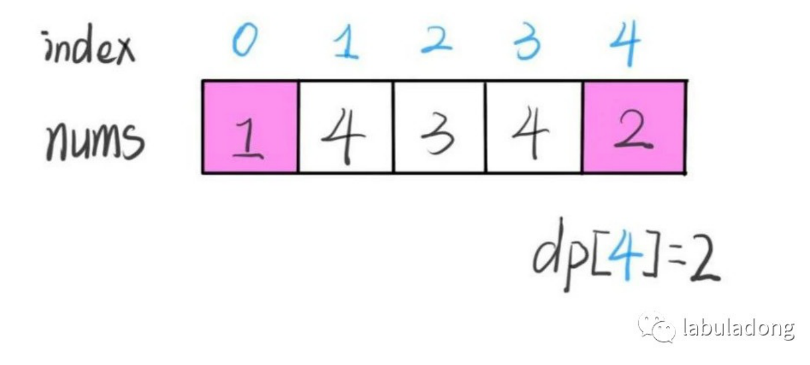
- 刚在这个过程中每个 $dp[i]$ 的结果是我们肉眼看出来的，我们应该怎么设计算法逻辑来正确计算每个 $dp[i]$ 呢？这就是动态规划中关键的部分了，要思考如何进行状态转移，这里就可以使用数学归纳的思想了。
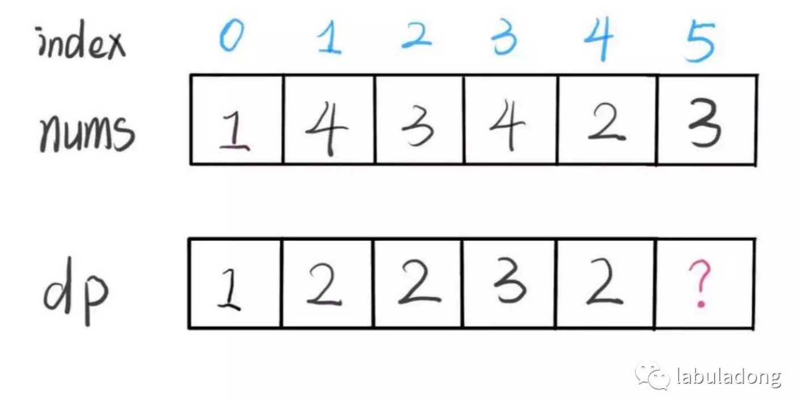
- 假设此时我们已经知道了 $dp[0…4]$ 的所有结果，现在需要求 $dp[5]$ 值，也就是相求以 $nums[5]$ 结尾的最长递增子序列。
- $nums[5]=3$，既然是递增子序列，我们只要找到前面那些结尾比 3 小的子序列，然后把 3 接到最后，就可以形成一个新的递增子序列，而且这个新的子序列长度加 1。
- 当然，可能形成很多新的子序列，但是我们只要最长的，把最长子序列的长度作为 $dp[5]$ 即可。
for (int j = 0; j < i; j++) {
// 找出 nums[i] 之前的元素中小于 nums[i] 的元素，将 nums[i] 接在其后面，然后把 dp[i] + 1 即可
if (nums[j] < nums[i]) {
dp[i] = Math.max(dp[i], dp[j] + 1);
}
}
- 这段代码的逻辑可以算出 $dp[5]$，类似数学归纳法，我们可以算出 $dp[5]$，其他的就可以都算出来了。
// 遍历 nums
for (int i = 0; i < nums.length; i++) {
for (int j = 0; j < i; j++) {
// 找出 nums[i] 之前的元素中小于 nums[i] 的元素，将 nums[i] 接在其后面，然后把 dp[i] + 1 即可
if (nums[j] < nums[i]) {
dp[i] = Math.max(dp[i], dp[j] + 1);
}
}
}
- 还有一个细节问题，$dp$ 数组应该全部初始化为 1，因为子序列最少也要包含自己，所以长度最少为 1。
至此，这道题就解决了，时间复杂度为 $O(N^2)$，最后总结一下动态规划的设计流程：
- 首先明确 $dp$ 数组所存数据的含义。 这步很重要，如果不得当或者不够清晰，会阻碍之后的步骤。
- 然后根据 $dp$ 数组的定义，运用数学归纳法的思想，假设 $dp[0…i-1]$ 都已知，想办法求出 $dp[i]$，一旦这一步完成，整个题目就解决了。但如果无法完成这一步，可能是以下原因：
- $dp$ 数组的定义不够恰当，需要重新定义 $dp$ 数组的含义。
- $dp$ 数组存储的信息不够，不足以推出下一步的答案，需要把 $dp$ 数组扩大成二维数组甚至三维数组。
- 最后想一想问题的 $base\space case$ 是什么，以此来初始化 $dp$ 数组，以保证算法正确运行。
1.1.2.1.2 参考代码 #
/**
* 300. 最长递增子序列（版本 1：动态规划）
* 给你一个整数数组 nums ，找到其中最长严格递增子序列的长度。
* 子序列是由数组派生而来的序列，删除（或不删除）数组中的元素而不改变其余元素的顺序。例如，[3,6,2,7] 是数组 [0,3,1,6,2,2,7] 的子序列。
*
* @param nums 整数数组
* @return 最长严格递增子序列的长度
*/
public int lengthOfLISV1(int[] nums) {
// 定义 dp 数组，其中第 i 个元素表示以 nums[i]这个数结尾的最长递增子序列的长度
int[] dp = new int[nums.length];
// 将数组中的元素初始化为 1
Arrays.fill(dp, 1);
// 遍历 nums
for (int i = 0; i < nums.length; i++) {
for (int j = 0; j < i; j++) {
// 找出 nums[i] 之前的元素中小于 nums[i] 的元素，将 nums[i] 接在其后面，然后把 dp[i] + 1 即可
if (nums[j] < nums[i]) {
dp[i] = Math.max(dp[i], dp[j] + 1);
}
}
}
// dp 数组中最大的元素即为最长递增子序列的长度
int res = 0;
for (int i = 0; i < dp.length; i++) {
res = Math.max(res, dp[i]);
}
// 返回结果
return res;
}
1.1.2.2 二分查找法 #
1.1.2.2.1 问题分析 #
最长递增子序列和一种叫做Patience Game的纸牌游戏有关，甚至有一种排序方法就叫做Patience Sorting（耐心排序）。该纸牌游戏的玩法如下：
- 首先，给我们一副扑克牌，我们想遍历数组那样从左到右一张一张处理这些扑克牌，最终要把这些牌分成若干堆。
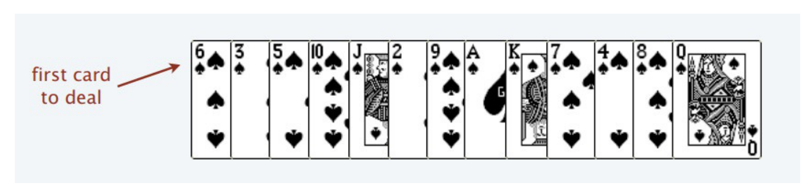
- 处理这些扑克牌要遵循以下规则：
- 只能把点数小的牌压到点数比他大的牌上。
- 如果当前牌点数较大没有可以放置的堆，则新建一个堆，把这张牌放进去。
- 如果当前牌有多个堆可供选择，则选择最左边的堆放置（保证牌堆顶的牌有序）。
- 比如说上述的扑克牌最终会被分成这样 5 堆（我们认为 $A$ 的值最大，而不是 1）。
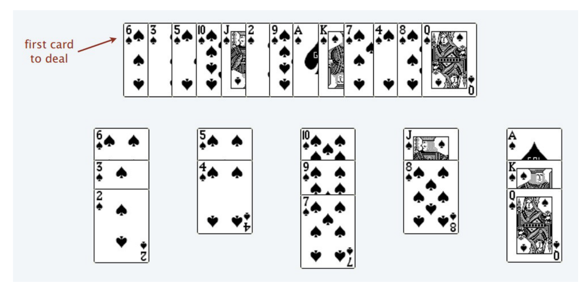
- 按照上述规则执行，可以算出最长递增子序列，牌的堆数就是最长递增子序列的长度。

- 我们只要把处理扑克牌的过程编程写出来即可。每次处理一张扑克牌不是要找到一个合适的牌堆顶来放吗，牌堆顶的牌不是有序吗，这就能用到 二分查找了：用寻找左侧边界的二分查找法来搜索当前牌应放置的位置。
1.1.2.2.2 参考代码 #
/**
* 300. 最长递增子序列（版本 2：二分数组）
* 给你一个整数数组 nums ，找到其中最长严格递增子序列的长度。
* 子序列是由数组派生而来的序列，删除（或不删除）数组中的元素而不改变其余元素的顺序。例如，[3,6,2,7] 是数组 [0,3,1,6,2,2,7] 的子序列。
*
* @param nums 整数数组
* @return 最长严格递增子序列的长度
*/
public int lengthOfLISV2(int[] nums) {
// 牌堆顶部的牌
int[] top = new int[nums.length];
// 牌堆数
int piles = 0;
// 遍历 nums，将牌进行分堆
for (int i = 0; i < nums.length; i++) {
int poker = nums[i];
// 采用寻找左侧边界的二分查找法，寻找牌应放置的堆的位置
int left = 0, right = piles - 1;
while (left <= right) {
int mid = left + (right - left) / 2;
if (top[mid] > poker) {
right = mid - 1;
} else if (top[mid] < poker) {
left = mid + 1;
} else if (top[mid] == poker) {
right = mid - 1;
}
}
// 没找到放牌的位置，则新建一堆
if (left >= piles) {piles++;};
// 将牌放到该堆的位置
top[left] = poker;
}
// 牌堆数即为最长递增子序列的长度，将其直接返回即可
return piles;
}
最长回文子序列 #
1.2.1 题目 #
给定一个字符串 s ，找到其中最长的回文子序列，并返回该序列的长度。可以假设 s 的最大长度为 1000 。 示例 1: 输入:
"bbbab"
输出:
4
一个可能的最长回文子序列为 “bbbb”。
示例 2: 输入:
"cbbd"
输出:
2
一个可能的最长回文子序列为 “bb”。
提示：
- 1 <= s.length <= 1000
- s 只包含小写英文字母
1.2.2 解题思路 #
1.2.2.1 子序列问题处理模板 #
对于这种子序列问题，我们一般需要使用动态规划的方法来解决：
- 找状态关系（通过数学归纳获得）。
- 定义 dp 数组（根据状态转移方程获得）。
dp 数组的定义主要有两种方式，一种是定义一个一维数组，另一种是定义一个二维数组。
1.2.2.1.1 一维 dp 数组 #
例如，在 最长递增子序列中，我们就是定义了一个一维数组，其含义为：在子数组 $array[0..i]$ 中，我们要求的子序列（最长递增子序列）的长度是 $dp[i]$。
int n = array.length;
int[] dp = new int[n];
for (int i = 1; i < n; i++) {
for (int j = 0; j < i; j++) {
dp[i] = 最值(dp[i], dp[j] + ...)
}
}
1.2.2.1.2 二维 dp 数组 #
这种思路运用相对多一些，尤其是涉及两个字符串/数组的子序列。本思路中 dp 数组含义又分为只涉及一个字符串和涉及两个字符串两种情况。
- 只涉及一个字符串/数组时： 在子数组 $array[i..j]$ 中，我们要求的子序列（最长回文子序列）的长度为 $dp[i][j]$。
- 涉及两个字符串/数组：在子数组 $arr1[0..i]$ 和 $arr2[0..j]$ 中，我们要求的子序列（最长公共子序列）长度为 $dp[i][j]$。
1.2.2.2 问题分析 #
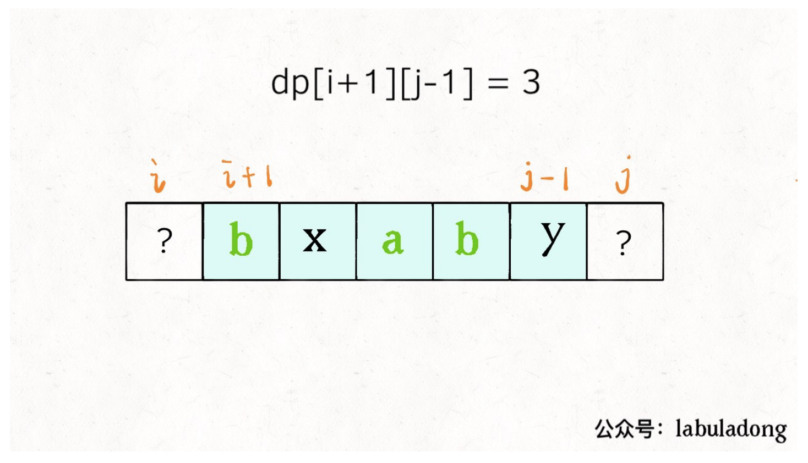
dp 函数的定义为：在子串 $s[i..j]$ 中，最长回文子序列的长度为 $dp[i][j]$。
如果我们想求 $dp[i][j]$，假设我们已经知道了子问题 $dp[i+1][j-1]$ 的结果，即 $s[i+1..j-1]$ 中最长回文子序列的长度，那么我们就可以想办法算出 $dp[i][j]$ 的值，即 $s[i..j]$ 中最长回文子序列的长度，这主要取决于 $s[i]$ 和 $s[j]$ 的字符。
- 如果 $s[i]==s[j]$： 则他俩加上 $s[i+1..j-1]$ 中的最长回文子序列就是 $s[i..j]$ 的最长回文子序列。

- 如果 $s[i]!=s[j]$： 说明他俩不可能同时出现在 $s[i..j]$ 的最长回文子序列中，那么把他俩分别加入 $s[i+1..j-1]$ 中，看看哪个子串产生的回文子序列更长即可。
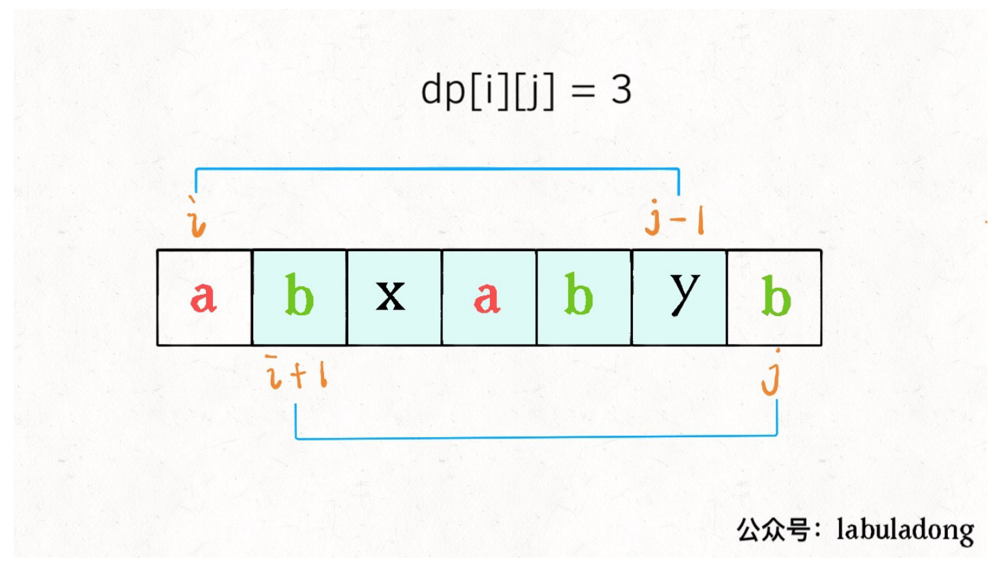
代码模板如下：
if (s[i] == s[j])
// 它俩⼀定在最⻓回⽂⼦序列中
dp[i][j] = dp[i + 1][j - 1] + 2;
else
// s[i+1..j] 和 s[i..j-1] 谁的回⽂⼦序列更⻓？
dp[i][j] = max(dp[i + 1][j], dp[i][j - 1]);
至此，状态转移方程就写出来了，根据dp 数组的定义，我们要求的就是 $dp[0][n-1]$，也就是整个 s 的最长回文子序列的长度。
1.2.2.3 参考代码 #
- 首先明确一下 $base \space case$，如果只有一个字符，显然最长回文子序列的长度为 1，即 $dp[i][j]=1 \space (i==j)$。
- 因为 $i$ 肯定小于 $j$，所以对于那些 $i>j$ 的位置，根本不存在什么子序列，应该初始化为 0。
- 根据我们刚才的状态转移方程，想求 $dp[i][j]$ 需要知道 $dp[i+1][j-1]$，$dp[i+1][j]$，$dp[i][i-1]$ 这三个位置，将其填入 dp 数组后是这样：
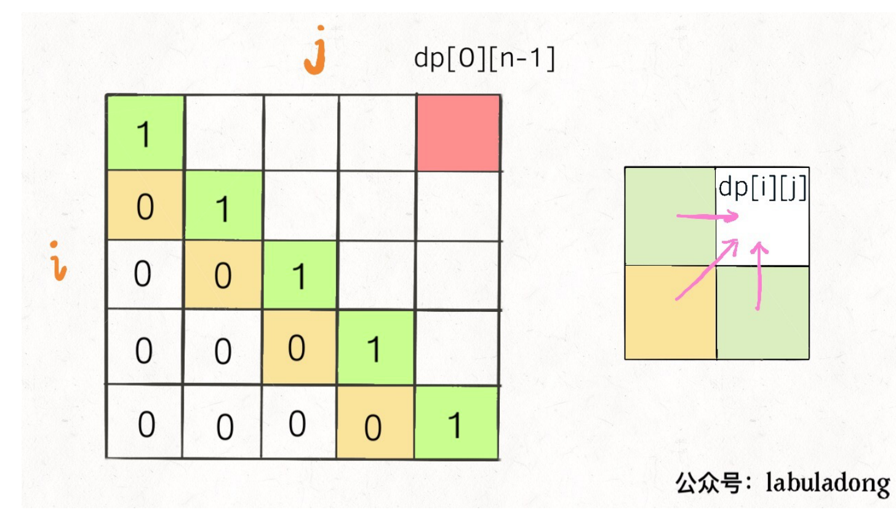
为了保证每次计算 $dp[i][j]$，左、下、右方向的位置已经被计算出来了，只能斜着遍历或者反着遍历。
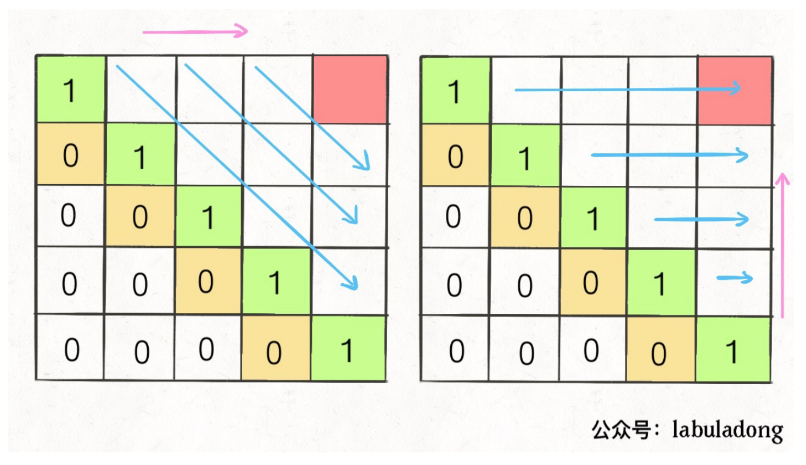
我选择反着遍历，参考代码如下：
package com.grayson.top;
import java.util.Arrays;
/**
* @author peng.wei
* @version 1.0
* @date 2021/4/8 14:50
* @Description 最长回文子序列
*/
public class L516 {
/**
* 516. 最长回文子序列
* 给定一个字符串 s ，找到其中最长的回文子序列，并返回该序列的长度。可以假设 s 的最大长度为 1000 。
* @param s 字符串
* @return 最长回文子序列的长度
*/
public int longestPalindromeSubseq(String s) {
int n = s.length();
// dp table: s[i...j] 子串的回文子序列的最大长度
// 最终的结果为 dp[0][n - 1]
int[][] dp = new int[n][n];
// base case: 单个字符的回文子序列的最大长度为 1
for (int i = 0; i < n; i++) {
dp[i][i] = 1;
}
for (int i = n - 1; i >= 0; i--) {
for (int j = i + 1; j < n; j++) {
if (s.charAt(i) == s.charAt(j)) {
// 两个字符相等，将 dp[i + 1][j - 1] + 1
dp[i][j] = dp[i + 1][j - 1] + 2;
} else {
// 两个字符不相等，则 dp[i][j] = max(dp[i][j - 1], dp[i + 1][j])
dp[i][j] = Math.max(dp[i][j - 1], dp[i + 1][j]);
}
}
}
// 返回最终的结果 dp[0][n - 1]
return dp[0][n - 1];
}
}
最长公共子序列 #
1.3.1 解题思路 #
1.3.1.1 动态规划 #
1.3.1.1.1 问题分析 #
- 类似的解法还可用于 1143. 最长公共子序列，不过这里和求最长重复子数组不同的一点是子序列中的元素不一定在原数组中连续，因此，在 $dp$ 数组的转换上稍微会有一定区别，具体如下：
- 如果 $nums1[i] = nums2[j]$，则 $dp[i][j] = dp[i + 1][j + 1] + 1$。
- 否则，$dp[i][j] = max(dp[i + 1][j], dp[i][j + 1])$。
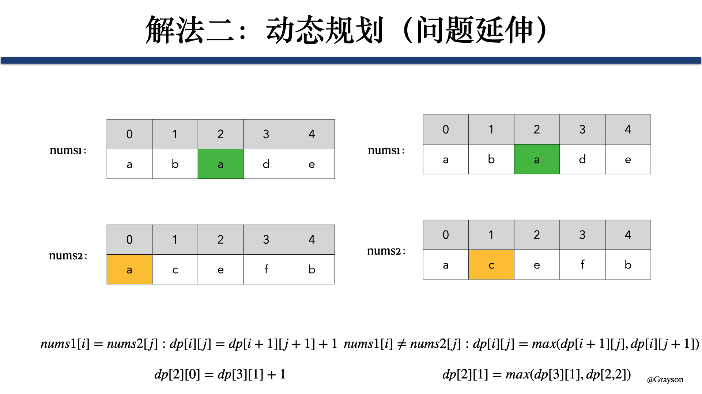
1.3.1.1.2 参考代码 #
/**
* 1143. 最长公共子序列
* @param text1 数组 1
* @param text2 数组 2
* @return 两个数组中公共的、长度最长的子数组的长度
*/
public int longestCommonSubsequence(String text1, String text2) {
int n1 = text1.length();
int n2 = text2.length();
int res = 0;
// dp 数组，其中 dp[i][j] 表示 nums1[i:] 和 nums2[j:] 的最长公共子序列的长度，则 dp 数组中最大的元素即为 nums1 和 nums2 的最长公共子序列的长度
int[][] dp = new int[n1 + 1][n2 + 1];
// 分别遍历 nums1 和 nums2，计算最长公共子序列的长度
for (int i = n1 - 1; i >= 0; i--) {
for (int j = n2 - 1; j >=0; j--) {
// 如果 nums1[i] = nums2[j]，则 dp[i][j] = dp[i + 1][j + 1]，否则，dp[i][j] = max(dp[i + 1][j], dp[i][j + 1])
if (text1.charAt(i) == text2.charAt(j)) {
dp[i][j] = dp[i + 1][j + 1] + 1;
} else {
dp[i][j] = Math.max(dp[i + 1][j], dp[i][j + 1]);
}
res = Math.max(res, dp[i][j]);
}
}
// 返回结果
return res;
}
2 数组类问题 #
2.1最大子序和 #
2.1.1 题目 #
给定一个整数数组 nums ，找到一个具有最大和的连续子数组（子数组最少包含一个元素），返回其最大和。
示例 1：
输入：nums = [-2,1,-3,4,-1,2,1,-5,4]
输出：6
解释：连续子数组 [4,-1,2,1] 的和最大，为 6 。
示例 2：
输入：nums = [1]
输出：1
示例 3：
输入：nums = [0]
输出：0
示例 4：
输入：nums = [-1]
输出：-1
示例 5：
输入：nums = [-100000]
输出：-100000
提示：
- 1 <= nums.length <= 3 * 104
- -105 <= nums[i] <= 105
进阶： 如果你已经实现复杂度为 O(n) 的解法，尝试使用更为精妙的 分治法 求解。
2.1.2 解题思路 #
2.1.2.1 暴力法 #
2.1.2.1.1 问题分析 #
- 依次遍历单个元素、两个元素、…、N 个元素，然后从中选取最大子序和。

2.1.2.1.2 参考代码 #
/**
* 53. 最大子序和（版本 1：暴力法）
*
* @param nums 数组
* @return 最大子序和
*/
public int maxSubArrayV1(int[] nums) {
int len = nums.length;
int max = nums[0];
for (int i = 0; i < len; i++) {
for (int j = 0; j < len - i; j++) {
int sum = 0;
for (int k = 0; k <= i; k++) {
sum += nums[j + k];
}
max = Math.max(sum, max);
}
}
return max;
}
2.1.2.2 动态规划 #
2.1.2.2.1 问题分析 #
- 定义 $dp$ 数组：
- $dp[i]$ 表示 $nums$ 中以 $nums[i]$ 结尾的最大子序和。
- $dp[i]$ 中最大的元素即为 $nums$ 的最大子序和。
- $dp[0] = nums[0]$。
- 列出状态转移方程： $$ dp[i] = max(dp[i-1] + nums[i], nums[i]) $$
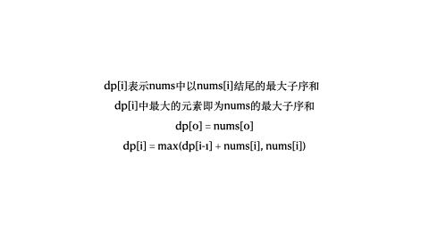
2.1.2.2.2 参考代码 #
/**
* 53. 最大子序和（版本 2：动态规划）
*
* @param nums 数组
* @return 最大子序和
*/
public int maxSubArrayV2(int[] nums) {
int len = nums.length, max;
// dp 数组，其中 dp[i] 表示以 nums[i] 结尾的 nums[0...i] 序列中最大子序和
// 则最终 dp 数组中的最大值便是整个数组的最大子序和
int[] dp = new int[len];
dp[0] = nums[0];
max = dp[0];
for (int i = 1; i < len; i++) {
dp[i] = Math.max(nums[i] + dp[i - 1], nums[i]);
max = Math.max(max, dp[i]);
}
return max;
}
2.1.2.3 贪心法 #
2.1.2.3.1 问题解析 #
- 如果 sum 小于 0，说明他对于下一个 sum 起副作用，所以将 sum 重置为当前元素。
- 否则的话，直接将当前元素累加到 sum 上。

2.1.2.3.2 参考代码 #
/**
* 53. 最大子序和（版本 3：贪心算法）
*
* @param nums 数组
* @return 最大子序和
*/
public int maxSubArrayV3(int[] nums) {
int sum = nums[0], max = nums[0];
int len = nums.length;
for (int i = 1; i < len; i++) {
if (sum < 0) {
// 如果 sum 小于 0，说明他对于下一个 sum 起副作用，所以将 sum 重置为当前元素
sum = nums[i];
} else {
// 否则的话，直接将当前元素累加到 sum 上
sum += nums[i];
}
max = Math.max(max, sum);
}
return max;
}
打家劫舍 #
2.2.1 解题思路 #
2.2.1.1 动态规划 #
2.2.1.1.1 问题分析 #
-
该题目中 $dp$ 数组的含义为 $dp[i]$ 表示以从第 $i$ 家开始偷窃，在不触动警报装置的情况下，一夜之内能够偷窃得到的最高金额，且：
$$ dp[i] = max(dp[i + 1], dp[i + 2] + nums[i]) $$
2.2.1.1.2 参考代码 #
public int rob(int[] nums) {
int m = nums.length;
int[] dp = new int[m];
// base case
if (m >= 1) {dp[m - 1] = nums[m - 1];}
if (m >= 2) {dp[m - 2] = Math.max(nums[m - 1], nums[m - 2]);}
for (int i = m - 3; i >= 0; i--) {
dp[i] = Math.max(dp[i + 1], dp[i + 2] + nums[i]);
}
return dp[0];
}
乘积最大子数组 #
2.3.1 解题思路 #
2.3.1.1 动态规划 #
2.3.1.1.1 问题分析 #
- 对于这种含有不定状态的最值问题，一般可以通过设置多个 $dp$ 数组来求解，分别用不同的 $dp$ 数组来表示不同的状态。
- 在本题中，假如我们直接使用一个 $dp$ 数组，其中 $dp[i]$表示以第 $i$ 个元素结尾的最大连续子数组的乘积，此时当前位置的最优解未必是由前一个位置的最优解转移得到。
- 因此，我们可以根据正负性进行讨论：
- 如果当前位置是一个负数的话，那么我们希望以他前一个位置结尾的某个段的积也是个负数，这样就可以负负得正，并且我们希望这个积尽可能负得多，即尽可能小。
- 如果当前位置是一个正数的话，那么我们希望以他前一个位置结尾的某个段的积也是个正数，并且我们希望这个积尽可能大。
- 因此我们需要维护两个 $dp$ 数组，**分别是 $dp_{max}$ 和**$dp_{min}$：
-
$dp_{max}$ 表示**以第 $i$ 个元素结尾的最大连续子数组的乘积**，且：
$$ dp_{max} = max(dp_{max}[i - 1] \times nums[i], dp_{min}[i - 1] \times nums[i], nums[i]) $$
-
$dp_{min}$ 表示**以第 $i$ 个元素结尾的最小连续子数组的乘积**，且：
$$ dp_{min} = min(dp_{max}[i - 1] \times nums[i], dp_{min}[i - 1] \times nums[i], nums[i]) $$
-
2.3.1.1.2 参考代码 #
/**
* 152. 乘积最大子数组（版本 1：动态规划（优化前））
*
* @param nums 数组
* @return 数组中乘积最大的连续子数组的乘积
*/
public int maxProductV1(int[] nums) {
int m = nums.length;
// dp 数组，dpMax[i] 表示以第 i 个元素结尾的最大连续子数组的乘积
int[] dpMax = new int[m];
// dp 数组，dpMin[i] 表示以第 i 个元素结尾的最小连续子数组的乘积
int[] dpMin = new int[m];
int res;
dpMax[0] = nums[0];
dpMin[0] = nums[0];
res = dpMax[0];
for (int i = 1; i < m; i++) {
int item = nums[i];
// dpMax[i] = max(dpMax[i - 1] * nums[i], dpMin[i - 1] * nums[i], nums[i])
dpMax[i] = Math.max(
dpMax[i - 1] * item,
Math.max(
dpMin[i - 1] * item,
item
)
);
// dpMin[i] = min(dpMax[i - 1] * nums[i], dpMin[i - 1] * nums[i], nums[i])
dpMin[i] = Math.min(
dpMax[i - 1] * item,
Math.min(
dpMin[i - 1] * item,
item
)
);
// 去 dpMax 中的最大值
res = Math.max(res, dpMax[i]);
}
// 返回最后结果
return res;
}
由于第 $i$ 个状态只和第 $i - 1$ 个状态相关，根据滚动数组思想，我们可以只用两个变量来维护 $i - 1$ 时刻的状态，一个维护 $dpMax$，一个维护 $dpMin$。
/**
* 152. 乘积最大子数组（版本 2：动态规划（优化后））
*
* @param nums 数组
* @return 数组中乘积最大的连续子数组的乘积
*/
public int maxProductV2(int[] nums) {
int m = nums.length;
// dpMax 表示以第 i 个元素结尾的最大连续子数组的乘积
int dpMax = nums[0];
// dpMin 表示以第 i 个元素结尾的最小连续子数组的乘积
int dpMin = nums[0];
int res;
res = dpMax;
for (int i = 1; i < m; i++) {
int item = nums[i];
int dpMaxTemp = dpMax, dpMinYemp = dpMin;
// dpMax = max(dpMaxTemp * nums[i], dpMinYemp * nums[i], nums[i])
dpMax = Math.max(
dpMaxTemp * item,
Math.max(
dpMinYemp * item,
item
)
);
// dpMin = min(dpMaxTemp * nums[i], dpMinYemp * nums[i], nums[i])
dpMin = Math.min(
dpMaxTemp * item,
Math.min(
dpMinYemp * item,
item
)
);
// 去 dpMax 中的最大值
res = Math.max(res, dpMax);
}
// 返回最后结果
return res;
}
三角形最小路径和 #
2.4.1 解题思路 #
2.4.1.1 动态规划 #
2.4.1.1.1 问题分析 #
-
该题目中 $dp$ 数组的含义为 $dp[i][j]$表示从顶点到 $triangle.get(i).get(j)$ 的最小路径和，且：
$$ dp[i][j] = Math.min(dp[i - 1][j], dp[i - 1][j - 1]) + triangle.get(i).get(j) $$
2.4.1.1.2 参考代码 #
/**
* 120. 三角形最小路径和
*
* @param triangle 三角形顶点列表
* @return 三角形自顶向下的最小路径和
*/
public int minimumTotal(List<List<Integer>> triangle) {
int m = triangle.size();
int n = triangle.get(m - 1).size();
// dp 数组，其中 dp[i][j] 表示从顶点到 triangle.get(i).get(j) 的最小路径和
int[][] dp = new int[m][n];
int res = Integer.MAX_VALUE;
for (int i = 0; i < m; i++) {
for (int j = 0; j < triangle.get(i).size(); j++) {
int item = triangle.get(i).get(j);
// 转移关系为：dp[i][j] = Math.min(dp[i - 1][j], dp[i - 1][j - 1]) + triangle.get(i).get(j)
// 需要确保数组下标不要越界，即：i - 1 >= 0 && j - 1 >= 0 && j < triangle.get(i - 1).size()
if (i - 1 >= 0) {
if (j - 1 >= 0) {
if (j < triangle.get(i - 1).size()) {
dp[i][j] = Math.min(dp[i - 1][j], dp[i - 1][j - 1]) + item;
} else {
dp[i][j] = dp[i - 1][j - 1] + item;
}
} else {
dp[i][j] = dp[i - 1][j] + item;
}
} else {
dp[i][j] = item;
}
}
}
// 三角形最后一行中的最小路径和即为整个三角形自顶向下的最小路径和
for (int i = 0; i < triangle.get(m - 1).size(); i++) {
res = Math.min(res, dp[m - 1][i]);
}
return res;
}
解码方法 #
2.5.1 解题思路 #
2.5.1.1 动态规划 #
2.5.1.1.1 问题分析 #
-
动态规划中：
- 对于一维 $dp$ 数组一般有两种思路，一种是以 $nums[i]$ 开头，另一种是以 $nums[i]$ 结尾，我们在定义 $dp$ 数组时可以从这两个方面去考虑即可。
- 对于二维 $dp$ 数组一般可以从中间进行截取，例如 1.1.7 最长回文子序列中 $dp$ 数组的定义为 $dp[i][j]$ 表示 $s[i…j]$ 中包含的最长回文子序列的长度。
-
该题目中 $dp$ 数组的含义为 $dp[i]$ 表示以 $s.charAt(i)$ 开头的字符串的解码方法的总数，且：
$$ dp[i] = dp[i + 1] + dp[i + 2] $$
2.5.1.1.2 参考代码 #
/**
* 91. 解码方法
*
* @param s 消息字符串
* @return 消息字符串解码方法的总数
*/
public int numDecodings(String s) {
int m = s.length();
// dp 数组，其中 dp[i] 表示以 s.charAt(i) 开头的消息字符串解码方法的总数
int[] dp = new int[m];
for (int i = m - 1; i >= 0; i--) {
// 如果当前字符为 0，那么以该字符开头的字符串的解码方法总数为 0
if (s.charAt(i) == '0') {dp[i] = 0;}
// 如果当前字符不为 0，并且当前字符位于最后一个位置，那么以该字符开头的字符串的解码方法总数为 1
else if (i == m - 1) {dp[i] = 1;}
// 当前字符不为 0，并且当前字符位于倒数第二个位置
else if (i == m - 2) {
// 如果当前字符及其后两位所组成的数字大于 26，则当前字符及其后两位字符组成的字符串不能被解码，
// 以该字符开头的字符串的解码方法总数等于以下一个字符开头的字符串的解码方法总数
if (Integer.parseInt(s.substring(i, i + 2)) > 26) {dp[i] = dp[i + 1];}
// 如果当前字符及其后两位所组成的数字不大于 26，则当前字符及其后两位字符组成的字符串可以被解码，
// 以该字符开头的字符串的解码方法总数等于以下一个字符开头的字符串的解码方法总数加 1
else {dp[i] = dp[i + 1] + 1;}
}
// 当前字符不为 0，并且当前字符不位于倒数第二个位置
// 如果当前字符及其后两位所组成的数字大于 26，则当前字符及其后两位字符组成的字符串不能被解码，
// 以该字符开头的字符串的解码方法总数等于以下一个字符开头的字符串的解码方法总数
else if (Integer.parseInt(s.substring(i, i + 2)) > 26) {dp[i] = dp[i + 1];}
// 如果当前字符及其后两位所组成的数字不大于 26，则当前字符及其后两位字符组成的字符串可以被解码，
// 以该字符开头的字符串的解码方法总数等于以下一个字符开头的字符串的解码方法总数及以下面第二个字符开头的字符串的解码方法总数
else {dp[i] = dp[i + 1] + dp[i + 2];}
}
// 返回最后的结果
return dp[0];
}
打家劫舍 II #
2.6.1 解题思路 #
2.6.1.1 动态规划 #
2.6.1.1.1 问题分析 #
-
对于这种圆环型的问题，我们可以把他拆分成两部分，并对其分别去求结果，然后再将两部分的结果取最值即可。
-
该题目中 $dp$ 数组的含义为 $dp[i]$ 表示第 $i$ 户及之后所能偷到的最大金额，且：
$$ dp[i] = max(dp[i + 1], dp[i + 2] + nums[i]); $$
2.6.1.1.2 参考代码 #
/**
* 213. 打家劫舍 II
* @param nums 每个房屋存放金额的非负整数数组
* @return 在不触动警报装置的情况下 ，今晚能够偷窃到的最高金额
*/
public int rob(int[] nums) {
int m = nums.length;
// 将整个数组拆分成两部分，分别为 nums[0, nums.length - 2] 和 nums[1, nums.length - 1]，然后对这两部分分别求能够偷窃到的最大金额，并取二者的最大值即可
return m > 1 ? Math.max(subRob(nums, 0, m - 1), subRob(nums, 1, m)) : nums[0];
}
/**
* 在不触动警报装置的情况下 ，今晚能够偷窃到的最高金额
* @param nums 每个房屋存放金额的非负整数数组
* @param start 起始位置
* @param end 结束位置
* @return 在不触动警报装置的情况下 ，今晚能够偷窃到的最高金额
*/
public int subRob(int[] nums, int start, int end) {
int m = nums.length;
// dp 数组，其中 dp[i] 表示从第 i 户及后面住户中所能偷窃到的最高金额
int[] dp = new int[m];
// base case
if (end >= 1) {
dp[end - 1] = nums[end - 1];
}
if (end >= 2) {
if (nums[end - 2] >= nums[end - 1]) {
dp[end - 2] = nums[end - 2];
} else {
dp[end - 2] = nums[end - 1];
}
}
for (int i = end - 3; i >= start; i--) {
// 第 i 户及之后所能偷到的最大金额 等于 第 i 户及之后所能偷到的最大金额 与 第 i + 2 户所能偷到的最大金额和第 i 户金额之和 的最大值
dp[i] = Math.max(dp[i + 1], dp[i + 2] + nums[i]);
}
return dp[start];
}
最长重复子数组 #
2.7.1 题目 #
给两个整数数组 A 和 B ，返回两个数组中公共的、长度最长的子数组的长度。
示例：
输入：
A: [1,2,3,2,1]
B: [3,2,1,4,7]
输出：3
解释：
长度最长的公共子数组是 [3, 2, 1] 。
提示：
- 1 <= len(A), len(B) <= 1000
- 0 <= A[i], B[i] < 100
2.7.2 解题思路 #
2.7.2.1 暴力解法 #
2.7.2.1.1 问题分析 #
- 首先将 $nums2$ 中的元素对应的下标保存在 $map$ 中，这样便于查找 $nums1$ 中的元素是否在 $nums2$ 中出现。
- 然后遍历 $nums1$，假设当前遍历的元素为 $item$：
- 如果 $item$ 没有在 $nums2$ 中出现，则直接返回。
- 如果 $item$ 在 $nums2$ 中出现，则以 $item$ 为起点，同步遍历 $nums1$ 和 $nums2$ 的后续元素，直到两个数组中对应元素不相等，或达到任意数组的边界，计算两个数组相应部分的的重复子数组的大小，并对最终的结果进行更新。
- 最后返回最终结果即可。
2.7.2.1.2 参考代码 #
/**
* 718. 最长重复子数组（版本 1：暴力解法）
* @param nums1 数组 1
* @param nums2 数组 2
* @return 两个数组中公共的、长度最长的子数组的长度
*/
public int findLengthV1(int[] nums1, int[] nums2) {
Map<Integer, Map<Integer, Integer>> map = new HashMap<>();
int n1 = nums1.length;
int n2 = nums2.length;
int maxLength = 0;
// 将 nums2 中的元素对应的下标保存在 map 中，这样便于查找 nums1 中的元素是否在 nums2 中出现
for (int i = 0; i < n2; i++) {
int item = nums2[i];
if (!map.containsKey(item)) {
Map<Integer, Integer> mapTemp = new HashMap<>();
mapTemp.put(i, 0);
map.put(item, mapTemp);
} else {
Map<Integer, Integer> mapTemp = map.get(item);
mapTemp.put(i, 0);
map.put(item, mapTemp);
}
}
// 遍历 nums1
for (int i = 0; i < n1; i++) {
int item = nums1[i];
// item 没有在 nums2 中出现，直接返回
if (!map.containsKey(item)) {continue;}
// item 在 nums2 中出现，获取其在 nums2 中对应的下标
Map<Integer, Integer> mapTemp = map.get(item);
// 依次以 item 在 nums2 中的下标的下一个位置为起点，计算两个数组的重复子数组的大小
for (Map.Entry<Integer, Integer> entry: mapTemp.entrySet()) {
int tempLength = 1;
int key = entry.getKey();
for (int j = key + 1; j < n2; j++) {
if (i + tempLength >= n1) {break;}
if (nums1[i + tempLength] != nums2[j]) {break;}
tempLength++;
}
maxLength = Math.max(maxLength, tempLength);
}
}
// 返回结果
return maxLength;
}
2.7.2.2 动态规划 #
2.7.2.2.1 问题分析 #
-
对于求最值的题目，都可以思考一下看是否可以用动态规划来求解，而动态规划的核心就是定义 $dp$ 数组，寻找状态转移方程。
-
$dp$数组的定义有一维和二维数组两种，这个需要根据具体的题目来具体分析。
-
本题中 $dp$ 数组可以定义为 $dp[i][j]$，表示 $nums1[i]$ 和 $nums2[j]$ 的最长公共前缀的长度，这样 $dp$数组中最大的元素即为 $nums1$ 和 $nums2$ 的最长重复子数组的长度。
-
然后分别遍历 $nums1$ 和 $nums2$：
- 如果 $nums1[i] = nums2[j]$，则 $dp[i][j] = dp[i + 1][j + 1] + 1$。
- 否则，$dp[i][j] = 0$。
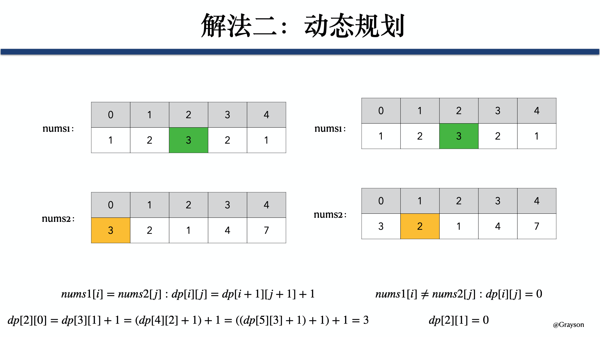
2.7.2.2.2 参考代码 #
/**
* 718. 最长重复子数组（版本 2：动态规划）
* @param nums1 数组 1
* @param nums2 数组 2
* @return 两个数组中公共的、长度最长的子数组的长度
*/
public int findLengthV2(int[] nums1, int[] nums2) {
int n1 = nums1.length;
int n2 = nums2.length;
int res = 0;
// dp 数组，其中 dp[i][j] 表示 nums1[i:] 和 nums2[j:] 的最长公共前缀的长度，则 dp 数组中最大的元素即为 nums1 和 nums2 的最长重复子数组的长度
int[][] dp = new int[n1 + 1][n2 + 1];
// 分别遍历 nums1 和 nums2，计算最长重复子数组的长度
for (int i = n1 - 1; i >= 0; i--) {
for (int j = n2 - 1; j >=0; j--) {
// 如果 nums1[i] = nums2[j]，则 dp[i][j] = dp[i + 1][j + 1]，否则，dp[i][j] = 0
dp[i][j] = (nums1[i] == nums2[j] ? dp[i + 1][j + 1] + 1 : 0);
res = Math.max(res, dp[i][j]);
}
}
// 返回结果
return res;
}
2.7.2.3 滑动窗口 #
2.7.2.3.1 问题分析 #
-
对于两个数组的遍历，可以通过滑动窗口的方法来减少遍历的次数，因为每次比较的只是滑动窗口内部相同区域的元素，相比于暴力解法而言，可以显著减少遍历的次数。
-
本题目中可以先把 $nums1$ 放在上面，$nums2$放在下边，然后将 $nums1$ 的第一个元素和 $nums2$ 的最后一个元素对齐，然后将 $nums2$ 从做往右滑动，直到 $nums1$ 的第一个元素和 $nums2$ 的第一个元素对齐，且每滑动一次，都对两个数组滑块内部相同区域的元素进行比较。
-
然后把 $nums2$ 放在上面，$nums1$放在下面，并且把 $nums2$ 的第一个元素和 $nums1$ 的第一个元素对齐，然后把 $nums1$ 从右往左滑动，直到 $nums2$ 的第一个元素和 $nums1$ 的最后一个元素对齐，且每滑动一次，都对两个数组滑块内部相同区域的元素进行比较。
-
其实第三步可以合到第二步里面，即在第二步中一直把 $nums2$ 滑动到第一个元素和 $nums1$ 的第一个元素对齐，但这样不太好实现，因此后面一步拆分成等价的第四步来实现。

2.7.2.3.2 参考代码 #
/**
* 718. 最长重复子数组（版本 3：滑动窗口）
* @param nums1 数组 1
* @param nums2 数组 2
* @return 两个数组中公共的、长度最长的子数组的长度
*/
public int findLengthV3(int[] nums1, int[] nums2) {
int n1 = nums1.length;
int n2 = nums2.length;
int res = 0;
// nums1 的第一个元素和 nums2 的最后一个元素对齐，然后将 num2 从左往右滑动，直到 nums2 的第一个元素和 nums1 的第一个元素对齐
for (int i = n2 - 1; i >= 0; i--) {
int minLen = Math.min(n1, n2 - i);
int tempRes = 0;
// 遍历 nums1 和 nums2 交叉的部分，并计算这一部分的最长重复子数组的长度
for (int j = 0; j < minLen; j++) {
if (tempRes != 0 && nums1[j] != nums2[i + j]) {
res = Math.max(res, tempRes);
tempRes = 0;
}
if (nums1[j] == nums2[i + j]) {
tempRes++;
}
}
res = Math.max(res, tempRes);
}
// nums2 的第一个元素和 nums1 的第一个元素对齐，然后将 num1 从右往左滑动，直到 nums2 的第一个元素和 nums1 的最后一个元素对齐
for (int i = 0; i < n1; i++) {
int minLen = Math.min(n1 - i, n2);
int tempRes = 0;
// 遍历 nums1 和 nums2 交叉的部分，并计算这一部分的最长重复子数组的长度
for (int j = 0; j < minLen; j++) {
if (tempRes != 0 && nums1[i + j] != nums2[j]) {
res = Math.max(res, tempRes);
tempRes = 0;
}
if (nums1[i + j] == nums2[j]) {
tempRes++;
}
}
res = Math.max(res, tempRes);
}
return res;
}